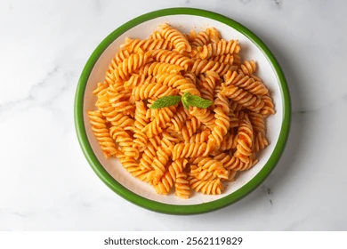
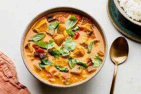
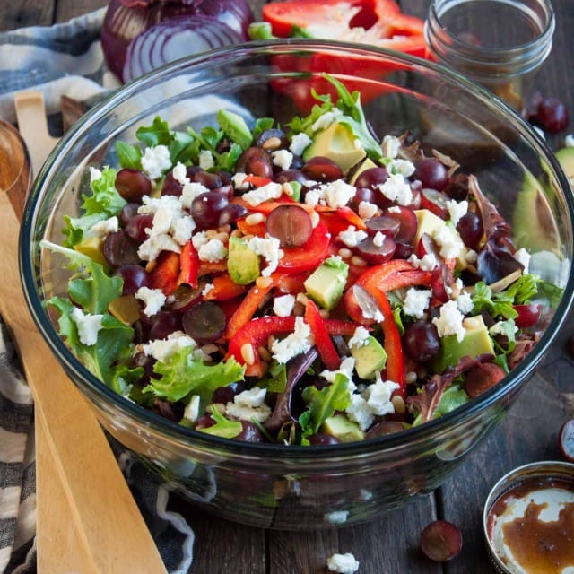

Learn to cook delicious meals step-by-step
Discover easy and tasty recipes that anyone can cook at home.

Time:20 min
Easy ,br>
Creamy Italian pasta

Time:35 min
Median
Traditional Italian spicy curry full of flavour.

Time:10 min
Easy
Healthy fresh vegetable salad for every meal.
Ingredients:
Pasta,Tomato,Garlic,Olive Oil,Cheese.
Steps:
1.Boil the pasta.
2.Prepare tomato sauce.
3.Mix pasta with sauce.
4.Add cheese and serve hot.
Join our free cooking course and start your journey!